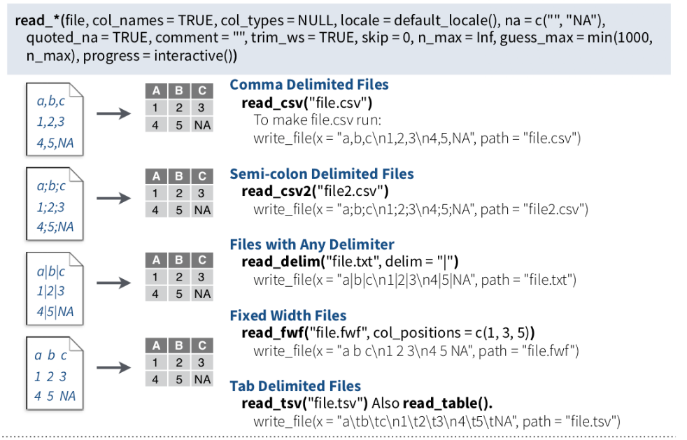

Code
getwd()[1] "F:/GitHub/R_QuartoWebsite/r4ds-env-modeling"Reading data for analysis and exporting the results to another system for report writing can be done efficiently with R. There are multiple ways to import and export data to/from R. In this tutorial, you will learn some most common ways to read and write data with R.
All data set use in this exercise can be downloaded from my dropbox folder.
It would be best if you created a working directory in R to read and write files locally. The following example shows how to create the working directory in R.
Before creating a working directory, you may check the directory of your current R session; the function getwd() will print the current working directory path as a string.
getwd()[1] "F:/GitHub/R_QuartoWebsite/r4ds-env-modeling"If you want to change the working directory in R you just need to call the setwd() function, specifying as argument the path of the new working directory folder.
setwd(“F:\R-Project”) setwd(“F:/R-Project”
Remember that you must use the forward slash / or double backslash \ in R! The Windows format of single backslash will not work.
The files under in a directory can check using dir() function
dir()
Importing data into R becomes time intensive. The easiest way to import data into R is by using RStudio IDE. This feature can be accessed from the Environment pane or from the **tools menu*. The importers are grouped into three categories: Text data, Excel data, and statistical data. The detail could be found here.
To access this feature, use the “Import Dataset” dropdown from the “Environment” pane:
Or through the “File” menu, followed by the “Import Dataset” submenu:
The easiest form of data to import into R is a simple text file. The primary function to import from a text file is read.table().
read.table(file, header = FALSE, sep = ““, quote =”“’”,…..)
# define data folder
dataFolder<-"E:/Dropbox/GitHub/Data/"
# read .txt file
df.txt<-read.table(paste0(dataFolder,"test_data.txt"), header= TRUE)
#data.txt<-read.table("test_data.txt", header= TRUE)
head(df.txt) ID treat var rep PH TN PN GW ster DTM SW GAs STAs
1 Low As BR01 1 84.0 28.3 27.7 35.7 20.5 126.0 28.4 0.762 14.60
2 Low As BR01 2 111.7 34.0 30.0 58.1 14.8 119.0 36.7 0.722 10.77
3 Low As BR01 3 102.3 27.7 24.0 44.6 5.8 119.7 32.9 0.858 12.69
4 Low As BR06 1 118.0 23.3 19.7 46.4 20.3 119.0 40.0 1.053 18.23
5 Low As BR06 2 115.3 16.7 12.3 19.9 32.3 120.0 28.2 1.130 13.72
6 Low As BR06 3 111.0 19.0 15.3 35.9 14.9 116.3 42.3 1.011 15.97names(df.txt) [1] "ID" "treat" "var" "rep" "PH" "TN" "PN" "GW" "ster"
[10] "DTM" "SW" "GAs" "STAs" However, scan() function could be used to scan and read data. It is usually used to read data into vector or list or from file in R Language.
sacn(scan(file = ““, what = double(), nmax = -1, n = -1, sep =”“,..)
# define data folder
dataFolder<-"E:/Dropbox/GitHub/Data/"
# Scan data
df.scan<-scan(paste0(dataFolder,"test_data.txt"), what = list("", "", "")) A comma delimited or comma-separated file (CSV) is one where each value in the file is separated by a comma, although other characters can be used. Reading data from a CSV file is made easy by the read.csv(), an extension of read.table(). It facilitates the direct import of data from CSV files.
read.csv(file, header = TRUE, sep = “,”, quote = “““,…)
# define data folder
dataFolder<-"E:/Dropbox/GitHub/Data/"
# read .csv file
df.csv<-read.csv(paste0(dataFolder,"test_data.csv"), header= TRUE)
#head(data.csv)One of the best ways to read an Excel file is to export it to a comma-delimited file and import it using the method above. Alternatively, we can use the xlsx package to access Excel files. The first row should contain variable/column names.
install.packages(“xlsx”)
# Load xlsx package
library(xlsx)
# define data folder
dataFolder<-"E:/Dropbox/GitHub/Data/"
# Import Sheet 1, from a excel file
data.xlsx <-xlsx::read.xlsx(paste0(dataFolder,"test_data.xlsx"), 1)
#data.xlsx <-read.xlsx("test_data.xlsx", 1)
names(data.xlsx) [1] "ID" "treat" "var" "rep" "PH" "TN" "PN" "GW" "ster"
[10] "DTM" "SW" "GAs" "STAs" JSON is an open standard file and lightweight data-interchange format that stands for JavaScript Object Notation. The JSON file is a text file that is language independent, self-describing, and easy to understand.
The JSON file is read by R as a list using the function fromJSON() of rjson package.
install.packages(“rjson”)
fromJSON(json_str, file, method = “C”, unexpected.escape = “error”, sim..)
# Load rjson package
library(rjson)
# define data folder
dataFolder<-"E:/Dropbox/GitHub/Data/"
# read .json file
df.json <- rjson::fromJSON(file= paste0(dataFolder, "test_data.json"), simplify=TRUE)
#print(df.json)We can convert to data frame
df.json <- as.data.frame(df.json)
head(df.json) ID treat var rep PH TN PN GW ster DTM SW GAs STAs
1 1 Low As BR01 1 84.0 28.3 27.7 35.7 20.5 126.0 28.4 0.762 14.60
2 2 Low As BR01 2 111.7 34.0 30.0 58.1 14.8 119.0 36.7 0.722 10.77
3 3 Low As BR01 3 102.3 27.7 24.0 44.6 5.8 119.7 32.9 0.858 12.69
4 4 Low As BR06 1 118.0 23.3 19.7 46.4 20.3 119.0 40.0 1.053 18.23
5 5 Low As BR06 2 115.3 16.7 12.3 19.9 32.3 120.0 28.2 1.130 13.72
6 6 Low As BR06 3 111.0 19.0 15.3 35.9 14.9 116.3 42.3 1.011 15.97foreign packages is mostly used to read data stored by Minitab, S, SAS, SPSS, Stata, Systat, dBase, and so forth.
install.packages(“foreign”)
Haven enables R to read and write various data formats used by other statistical packages by wrapping with ReadStat C library. written b Haven is part of the tidyverse. Current it support SAS, SPSS and Stata files
read.dta() function from foreign package can reads a file in Stata version 5-12 binary format (.dta) into a data frame.
# Load foreign package
library(foreign)
# define data folder
dataFolder<-"E:/Dropbox/GitHub/Data/"
# read .dta file
df.dta_01 <- foreign::read.dta(paste0(dataFolder,"test_data.dta")) # Load foreign package
library(haven)
# define data folder
dataFolder<-"E:/Dropbox/GitHub/Data/"
# read .dta file
df.dta_02 <- haven::read_dta(paste0(dataFolder,"test_data.dta")) # Load foreign package
library(foreign)
# define data folder
dataFolder<-"E:/Dropbox/GitHub/Data/"
# read .sav file
df.sav_01 <- foreign::read.spss(paste0(dataFolder,"test_data.sav")) # Load haven package
library(haven)
# define data folder
dataFolder<-"E:/Dropbox/GitHub/Data/"
# read .sav file
df.sav_02 <- haven::read_sav(paste0(dataFolder,"test_data.sav"))
#head(df.sav)read_sas() function from haven package can read sas (.sas7bdat) file easily.
# Load haven package
library(haven)
# define data folder
dataFolder<-"E:/Dropbox/GitHub/Data/"
# read .sas7bdat file
df.sas <- haven::read_sas(paste0(dataFolder,"test_data.sas7bdat"))
#head(df.sas)To export data and save to your local drive, you need the file path and an extension. First of all, the path is the location where the data will be stored.
Before we start, we need to specify the working directory in which we can export the data.
First of all, let create a data frame that we will going to export as a text/CSV file.
Variety =c("BR1","BR3", "BR16", "BR17", "BR18", "BR19","BR26",
"BR27","BR28","BR29","BR35","BR36") # create a text vector
Yield = c(5.2,6.0,6.6,5.6,4.7,5.2,5.7,
5.9,5.3,6.8,6.2,5.8) # create numerical vector
rice.data= data.frame(Variety, Yield)The popular R base functions for writing data are write.table(), write.csv(), write.csv2() and write.delim() functions.
Before start, you need to specify the working or destination directory in where you will save the data.
# Define destination folder
dataFolder<-"E:/Dropbox/GitHub/Data/"
write.csv(rice.data, paste0(dataFolder, "rice_data.csv"), row.names = F) # no row names
# write.csv(rice.data, "rice_data.csv", row.names = F) # no row namesExporting data from R to Excel can be achieved with several packages. The most known package to export data frames or tables as Excel is xlsx, that provides the write.xlsx and write.xlsx2 functions.
# load xlsx
library(xlsx)
# Define destination folder
dataFolder<-"E:/Dropbox/GitHub/Data/"
# write as xlsx file
xlsx::write.xlsx(rice.data, paste0(dataFolder, "rice_data.xlsx"))To write JSON Object to file, the toJSON() function from the rjson library can be used to prepare a JSON object and then use the write() function for writing the JSON object to a local file.
# Load rjson package
library(rjson)
# define data folder
dataFolder<-"E:/Dropbox/GitHub/Data/"
# create a JSON object
jsonData <-rjson::toJSON(rice.data)
# write JSON objects
write(jsonData, file= paste0(dataFolder,"rice_data.json"))If you want to share the data from R as Objects and share those with your colleagues through different systems so that they can use it right away into their R-workspace. These objects are of two types .rda/.RData which can be used to store some or all objects, functions from R global environment.
The save() function allows us to save multiple objects into our global environment:
If you specify save.image(file = “R_objects.RData”) Export all objects (the workspace image).
To save only one object it is more recommended saving it as RDS with the saveRDS() function:
# write .RDS file
saveRDS(rice.data, "E:/Dropbox/GitHub/Data/rice_data.rds")If you specify compress = TRUE as argument of the above functions the file will be compressed by default as gzip.
If you want export data from R to STATA, you will need to use the write.dta() function of the foreign package. This package provides functions for r
# Load foreign package
library(foreign)
# define data folder
dataFolder<-"E:/Dropbox/GitHub/Data/"
# write dta file
foreign::write.dta(rice.data, file= paste0(dataFolder,"rice_data.dta"))Haven enables R to read and write various data formats used by other statistical packages by wrapping with ReadStat C library. written b Haven is part of the tidyverse. Current it support SAS, SPSS and Stata files
The write_sav() function of haven package can be used to export R-object to SPSS
# Load haven package
library(haven)
# write .sav file
haven::write_sav(rice.data, "E:/Dropbox/GitHub/Data/rice_data.sav")The write_sas() function of haven package can be used to export R-object to SAS (.sas7bdat)
# Load haven package
library(haven)
# write .sav file
haven::write_sas(rice.data, "E:/Dropbox/GitHub/Data/rice_data.sas7bdat")The R-package data.tabel a improved version of data.frame, the a R-base function. It has following advantages:
• concise syntax: fast to type, fast to read • fast speed • memory efficient
install.packages(“data.table”)
We will use two important functions of data.table to read and write CSV files in R.
fread: This function is capable of reading CSV files quickly and conveniently.
fread(input, file,….)
# Load library
library(data.table)
# define data location
dataFolder<-"E:/Dropbox/GitHub/Data/"
# read with fread()
DT<-data.table::fread(paste0(dataFolder,"LBC_data.csv"), header= TRUE)
str(DT)Classes 'data.table' and 'data.frame': 3110 obs. of 25 variables:
$ REGION_ID : int 3 3 3 3 3 3 3 3 3 3 ...
$ STATE : chr "Alabama" "Alabama" "Alabama" "Alabama" ...
$ County : chr "Baldwin County" "Butler County" "Butler County" "Chambers County" ...
$ Empty Column 1 : logi NA NA NA NA NA NA ...
$ X : num 789778 877732 877732 984215 726606 ...
$ Y : num 884557 1007286 1007286 1148649 1023616 ...
$ Fips : int 1003 1013 1013 1017 1023 1025 1031 1035 1039 1041 ...
$ LCB Mortality Rate: num 48.1 38.3 38.3 49.6 31.8 42 53.7 46.9 65.5 57.1 ...
$ Smoking : num 20.8 26 26 25.1 21.8 22.6 21.2 24.9 25.9 22.9 ...
$ PM 25 : num 7.89 8.46 8.46 8.87 8.58 8.42 8.42 8.23 8.24 8.45 ...
$ NO2 : num 0.794 0.634 0.634 0.844 0.593 ...
$ SO2 : num 0.0353 0.0135 0.0135 0.0482 0.024 ...
$ Ozone : num 39.8 38.3 38.3 40.1 37.1 ...
$ Pop 65 : num 19.5 19 19 18.9 22.1 19 16.3 21.6 20.5 18.3 ...
$ Pop Black : num 9.24 43.94 43.94 39.24 41.94 ...
$ Pop Hipanic : num 4.54 1.26 1.26 2.14 0.86 1.34 6.76 1.84 1.62 1.86 ...
$ Pop White : num 83.1 52.6 52.6 56.4 56.3 ...
$ Education : int 66 38 38 47 55 39 60 35 53 44 ...
$ Poverty % : num 13.1 26.1 26.1 21.5 23.1 ...
$ Income Equality : num 4.5 5.1 5.1 4.7 5.8 8.2 4.8 4.9 4.6 5.8 ...
$ Uninsured : num 13.3 12.7 12.7 13.3 12.9 ...
$ DEM : num 36.8 111.7 111.7 227 68.2 ...
$ Radon Zone Class : chr "Zone-3" "Zone-3" "Zone-3" "Zone-3" ...
$ Urban Rural : chr "Medium/small metro" "Nonmetro" "Nonmetro" "Nonmetro" ...
$ Coal Production : chr "No" "No" "No" "No" ...
- attr(*, ".internal.selfref")=<externalptr> #DT<-fread("usa_geochemical.csv", header= TRUE) You cam compare data reading time of fread() and read.csv() functions:
system.time(read.csv(paste0(dataFolder,"LBC_data.csv"), header= TRUE)) user system elapsed
0.03 0.00 0.04 system.time(data.table::fread(paste0(dataFolder,"LBC_data.csv"), header= TRUE)) user system elapsed
0 0 0 fwrite(): This capable to write CSV field very fast!
fwrite(x, file = ““, append = FALSE, quote =”auto”, …..)
# define data location
dataFolder<-"E:/Dropbox/GitHub/Data/"
# read with fread()
data.table::fwrite(DT, paste0(dataFolder, "DT.csv"), row.names=F, quote=TRUE)Now we compare writing time of frwite functions with write.csv functions.
system.time(write.csv(DT, paste0(dataFolder, "DT.csv"), row.names=F))user system elapsed 0.19 0.00 0.20
system.time(data.table::fwrite(DT, paste0(dataFolder, "DT.csv"), row.names=F, quote=TRUE)) user system elapsed
0.02 0.00 0.01 Feather is a fast, lightweight, and easy-to-use binary file format for storing data frames. It has a few specific design goals:
Lightweight, minimal API: make pushing data frames in and out of memory as simple as possible
Language agnostic: Feather files are the same whether written by Python or R code. Other languages can read and write Feather files, too.
Feather is extremely fast. Since Feather does not currently use any compression internally, it works best when used with solid-state drives as come with most of today’s laptop computers. For this first release, we prioritized a simple implementation and are thus writing unmodified Arrow memory to disk source.
install.packages(“feather”)
#install.packages("feather")
library(feather)First we have to create feather data using write_feather() function
write_feather(x, path)
# define data location
dataFolder<-"E:/Dropbox/GitHub/Data/"
# Load feather
library(feather)
# write_feather()
feather::write_feather(DT, paste0(dataFolder, "LBC_data.feather"))We can read this feather data with lighting speed using read_feather function()
DT_feather <- feather::read_feather(paste0(dataFolder, "LBC_data.feather"))
str(DT_feather)tibble [3,110 × 25] (S3: tbl_df/tbl/data.frame)
$ REGION_ID : int [1:3110] 3 3 3 3 3 3 3 3 3 3 ...
$ STATE : chr [1:3110] "Alabama" "Alabama" "Alabama" "Alabama" ...
$ County : chr [1:3110] "Baldwin County" "Butler County" "Butler County" "Chambers County" ...
$ Empty Column 1 : logi [1:3110] NA NA NA NA NA NA ...
$ X : num [1:3110] 789778 877732 877732 984215 726606 ...
$ Y : num [1:3110] 884557 1007286 1007286 1148649 1023616 ...
$ Fips : int [1:3110] 1003 1013 1013 1017 1023 1025 1031 1035 1039 1041 ...
$ LCB Mortality Rate: num [1:3110] 48.1 38.3 38.3 49.6 31.8 42 53.7 46.9 65.5 57.1 ...
$ Smoking : num [1:3110] 20.8 26 26 25.1 21.8 22.6 21.2 24.9 25.9 22.9 ...
$ PM 25 : num [1:3110] 7.89 8.46 8.46 8.87 8.58 8.42 8.42 8.23 8.24 8.45 ...
$ NO2 : num [1:3110] 0.794 0.634 0.634 0.844 0.593 ...
$ SO2 : num [1:3110] 0.0353 0.0135 0.0135 0.0482 0.024 ...
$ Ozone : num [1:3110] 39.8 38.3 38.3 40.1 37.1 ...
$ Pop 65 : num [1:3110] 19.5 19 19 18.9 22.1 19 16.3 21.6 20.5 18.3 ...
$ Pop Black : num [1:3110] 9.24 43.94 43.94 39.24 41.94 ...
$ Pop Hipanic : num [1:3110] 4.54 1.26 1.26 2.14 0.86 1.34 6.76 1.84 1.62 1.86 ...
$ Pop White : num [1:3110] 83.1 52.6 52.6 56.4 56.3 ...
$ Education : int [1:3110] 66 38 38 47 55 39 60 35 53 44 ...
$ Poverty % : num [1:3110] 13.1 26.1 26.1 21.5 23.1 ...
$ Income Equality : num [1:3110] 4.5 5.1 5.1 4.7 5.8 8.2 4.8 4.9 4.6 5.8 ...
$ Uninsured : num [1:3110] 13.3 12.7 12.7 13.3 12.9 ...
$ DEM : num [1:3110] 36.8 111.7 111.7 227 68.2 ...
$ Radon Zone Class : chr [1:3110] "Zone-3" "Zone-3" "Zone-3" "Zone-3" ...
$ Urban Rural : chr [1:3110] "Medium/small metro" "Nonmetro" "Nonmetro" "Nonmetro" ...
$ Coal Production : chr [1:3110] "No" "No" "No" "No" ...Compare to and write.csv() as well as frwite(), write_feather() is very fast:
system.time(write.csv(DT, paste0(dataFolder, "LBC_data.csv"))) user system elapsed
0.17 0.00 0.17 # CSV file with fwrite
system.time(data.table::fwrite(DT, paste0(dataFolder, "LBC_data.csv"))) user system elapsed
0 0 0 # feather file with
system.time(feather::write_feather(DT, paste0(dataFolder, "LBC_data.feather"))) user system elapsed
0 0 0 The tidyverse is an collection of several R packages designed for data science. All packages share an underlying design philosophy, grammar, and data structures (Source).
The core tidyverse includes the packages that you’re likely to use in everyday data analyses. As of tidyverse 1.3.0, the following packages are included in the core tidyverse:

Install all the packages in the tidyverse by running install.packages(“tidyverse”).
Run library(tidyverse) to load the core tidyverse with and make it available in your current R session.
install.packages(“tidyverse”)
library(tidyverse)As well as readr, for reading flat files, the tidyverse package installs a number of other packages for reading data:
DBI for relational databases. You’ll need to pair DBI with a database specific backends like RSQLite, RMariaDB, RPostgres, or odbc. Learn more at https://db.rstudio.com.
haven for SPSS, Stata, and SAS data.
httr for web APIs.
readxl for .xls and .xlsx sheets.
googlesheets4 for Google Sheets via the Sheets API v4.
googledrive for Google Drive files.
rvest for web scraping.
jsonlite for JSON. (Maintained by Jeroen Ooms.)
xml2 for XML
A tibble, or tbl_df, is the latest method for reimagining of modern data-frame and It keeps all the crucial features regarding the data frame. Since R is an old language, and some things that were useful 10 or 20 years ago now get in your way. It’s difficult to change base R without breaking existing code, so most innovation occurs in tibble() data-frame with tibble package.
Key features of Tibble
A Tibble never alters the input type.
With Tibble, there is no need for us to be bothered about the automatic changing of characters to strings.
Tibbles can also contain columns that are the lists.
We can also use non-standard variable names in Tibble.
We can start the name of a Tibble with a number, or we can also contain space.
To utilize these names, we must mention them in backticks.
Tibble only recycles the vectors with a length of 1.
Tibble can never generate the names of rows.
source: https://www.educative.io/answers/what-is-tibble-versus-data-frame-in-r
We can use following functions readr package to import tabular data into R as tibble:

read_csv() and read_tsv() are special cases of the more general read_delim(). They’re useful for reading the most common types of flat file data, comma separated values and tab separated values, respectively. read_csv2() uses ; for the field separator and , for the decimal point. This format is common in some European countries.
For example, we will use read_csv() to import CSV file and see use glimpse() functions of dplyr package to explore the file structure.
# define data location
dataFolder<-"E:/Dropbox/GitHub/Data/"
df.chem_01<-readr::read_csv(paste0(dataFolder,"PAHdata.csv"))Rows: 20 Columns: 23
── Column specification ────────────────────────────────────────────────────────
Delimiter: ","
chr (1): Subject
dbl (22): Napthalene, 1-Methyl Napthalene, 2-Methyl Napthalene, Acenapthylen...
ℹ Use `spec()` to retrieve the full column specification for this data.
ℹ Specify the column types or set `show_col_types = FALSE` to quiet this message.dplyr::glimpse(df.chem_01)Rows: 20 Columns: 23 $ Subject 1-Methyl Napthalene 2-Methyl Napthalene 1,2 Dimethyl napthalene 1,6 Dimethyl Napthalene 1,6,7 Trimethylnapthalene 2-Methyl Anthracene 1-Methylphenanthrene 2-Methylphenanthrene 1-Phenyl napthalene 2-Phenyl napthalene 1 Methylpyrene Benzo(c)phenanthrene Triphenylene/Chrysene Benz(a)pyrene Benz(e)pyrene
# define data location
dataFolder<-"E:/Dropbox/GitHub/Data/"
df.chem_02<-read.csv(paste0(dataFolder,"PAHdata.csv"))
dplyr::glimpse(df.chem_02)Rows: 20
Columns: 23
$ Subject <chr> "P1", "P3", "P4", "P5", "P6", "P7", "P8", "…
$ Napthalene <dbl> 0.8993, 3.6257, 3.3921, 3.5772, 4.4907, NA,…
$ X1.Methyl.Napthalene <dbl> 4.9681, 4.6941, 3.5386, 4.7475, 5.1147, NA,…
$ X2.Methyl.Napthalene <dbl> 2.1508, 3.9316, 1.6955, 2.9361, 3.9976, NA,…
$ Acenapthylene <dbl> 0.0131, 3.0151, 1.3859, 3.3943, 6.6593, NA,…
$ X1.2.Dimethyl.napthalene <dbl> NA, NA, 1.2389, 2.6427, 2.1442, NA, 0.3623,…
$ X1.6.Dimethyl.Napthalene <dbl> 0.7003, 2.6382, 1.3807, 1.1006, 2.2575, NA,…
$ Fluorene <dbl> 2.2481, 7.3490, 7.1567, 8.4422, 9.2363, NA,…
$ X1.6.7.Trimethylnapthalene <dbl> 5.1024, 6.7913, 6.5171, 4.6803, 6.4649, NA,…
$ Anthracene <dbl> 10.1656, 9.6419, 22.3997, 26.3787, 20.9594,…
$ Dibenzothiopene <dbl> 1.1633, 4.1160, 4.2256, 3.9885, 3.2560, NA,…
$ X2.Methyl.Anthracene <dbl> 0.5409, 4.5190, 8.4014, 13.0101, 4.4900, NA…
$ X1.Methylphenanthrene <dbl> 14.9581, 12.0937, 19.4927, 11.2138, 2.0336,…
$ X2.Methylphenanthrene <dbl> 5.4785, 18.2456, 36.4282, 16.4553, 10.8040,…
$ Pyrene <dbl> 4.8498, 14.9369, 10.1099, 26.0579, 20.8687,…
$ Fluoranthene <dbl> 4.4798, 9.7189, 9.8037, 19.0489, 20.0866, N…
$ X1.Phenyl.napthalene <dbl> 2.8778, 6.2493, 5.2998, 7.9514, 10.1570, NA…
$ X2.Phenyl.napthalene <dbl> 3.4092, 8.7412, 3.6956, 12.8510, 15.1037, N…
$ X1.Methylpyrene <dbl> 4.5763, 7.5114, 13.6010, 8.1125, 19.2354, N…
$ Benzo.c.phenanthrene <dbl> 3.6456, 7.0372, 5.0960, 3.3828, 8.1571, NA,…
$ Triphenylene.Chrysene <dbl> 1.7422, 5.1389, 3.1635, 5.7081, 6.7483, NA,…
$ Benz.a.pyrene <dbl> NA, 2.8455, NA, 5.0701, 0.5873, NA, 9.0914,…
$ Benz.e.pyrene <dbl> NA, 1.8163, 0.2980, 0.6617, 2.3666, NA, 2.6…glimps() of dplyr is a improved function of r-base str() function.
The write() family functions of are an improvement to analogous function such as write.csv() because they are approximately twice as fast. Unlike write.csv(), these functions do not include row names as a column in the written file. A generic function, output_column(), is applied to each variable to coerce columns to suitable output.
We can use following functions readr package to extort tabular data from R:

readr::write_csv(df.chem_02, "df.chem_02")We can also use as_tibble() function of tibble package
df.chem_03<-tibble::as_tibble(read.csv(paste0(dataFolder,"PAHdata.csv"), check.names = FALSE))
str(df.chem_03)tibble [20 × 23] (S3: tbl_df/tbl/data.frame)
$ Subject : chr [1:20] "P1" "P3" "P4" "P5" ...
$ Napthalene : num [1:20] 0.899 3.626 3.392 3.577 4.491 ...
$ 1-Methyl Napthalene : num [1:20] 4.97 4.69 3.54 4.75 5.11 ...
$ 2-Methyl Napthalene : num [1:20] 2.15 3.93 1.7 2.94 4 ...
$ Acenapthylene : num [1:20] 0.0131 3.0151 1.3859 3.3943 6.6593 ...
$ 1,2 Dimethyl napthalene : num [1:20] NA NA 1.24 2.64 2.14 ...
$ 1,6 Dimethyl Napthalene : num [1:20] 0.7 2.64 1.38 1.1 2.26 ...
$ Fluorene : num [1:20] 2.25 7.35 7.16 8.44 9.24 ...
$ 1,6,7 Trimethylnapthalene: num [1:20] 5.1 6.79 6.52 4.68 6.46 ...
$ Anthracene : num [1:20] 10.17 9.64 22.4 26.38 20.96 ...
$ Dibenzothiopene : num [1:20] 1.16 4.12 4.23 3.99 3.26 ...
$ 2-Methyl Anthracene : num [1:20] 0.541 4.519 8.401 13.01 4.49 ...
$ 1-Methylphenanthrene : num [1:20] 14.96 12.09 19.49 11.21 2.03 ...
$ 2-Methylphenanthrene : num [1:20] 5.48 18.25 36.43 16.46 10.8 ...
$ Pyrene : num [1:20] 4.85 14.94 10.11 26.06 20.87 ...
$ Fluoranthene : num [1:20] 4.48 9.72 9.8 19.05 20.09 ...
$ 1-Phenyl napthalene : num [1:20] 2.88 6.25 5.3 7.95 10.16 ...
$ 2-Phenyl napthalene : num [1:20] 3.41 8.74 3.7 12.85 15.1 ...
$ 1 Methylpyrene : num [1:20] 4.58 7.51 13.6 8.11 19.24 ...
$ Benzo(c)phenanthrene : num [1:20] 3.65 7.04 5.1 3.38 8.16 ...
$ Triphenylene/Chrysene : num [1:20] 1.74 5.14 3.16 5.71 6.75 ...
$ Benz(a)pyrene : num [1:20] NA 2.845 NA 5.07 0.587 ...
$ Benz(e)pyrene : num [1:20] NA 1.816 0.298 0.662 2.367 ...